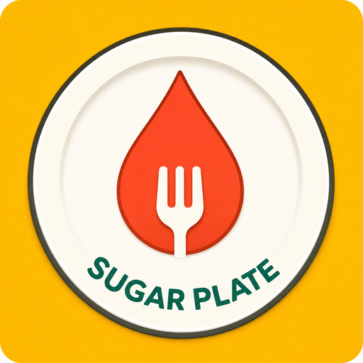
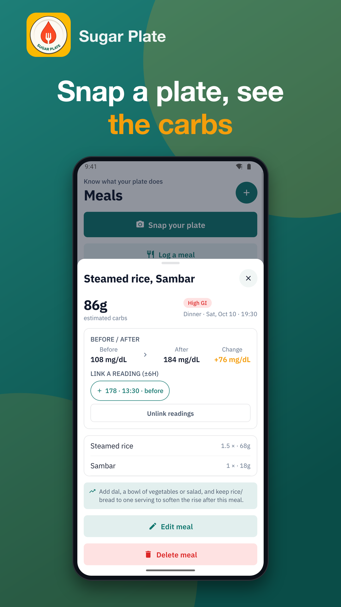
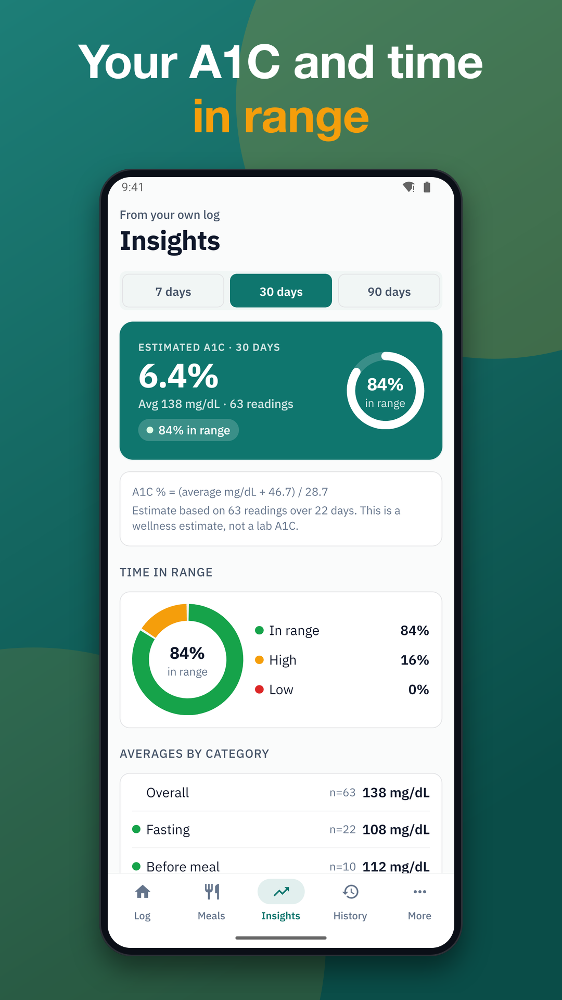
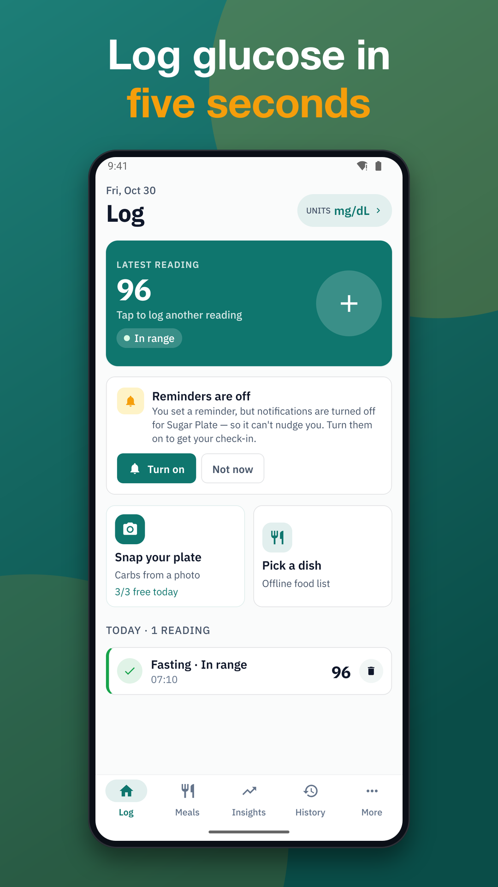
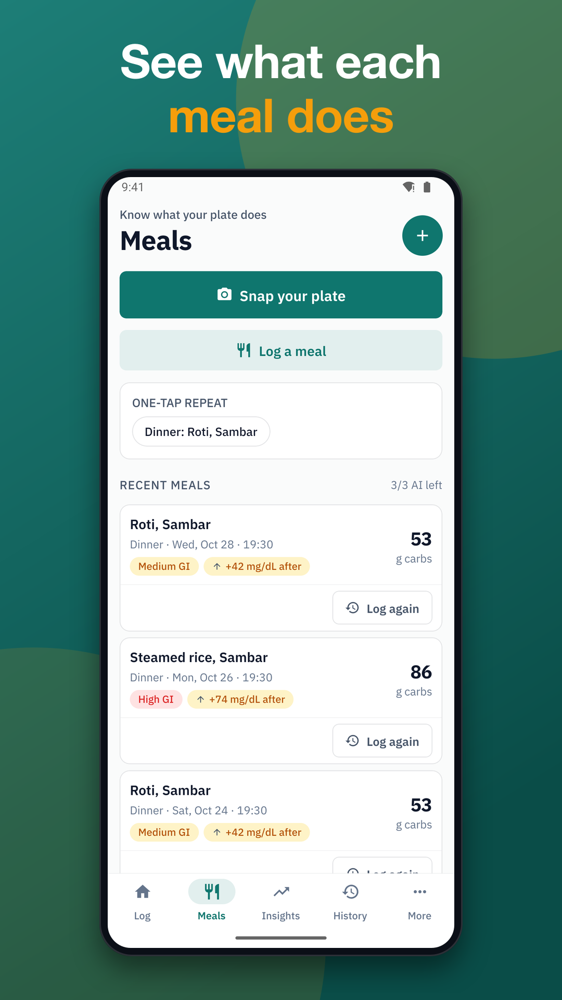
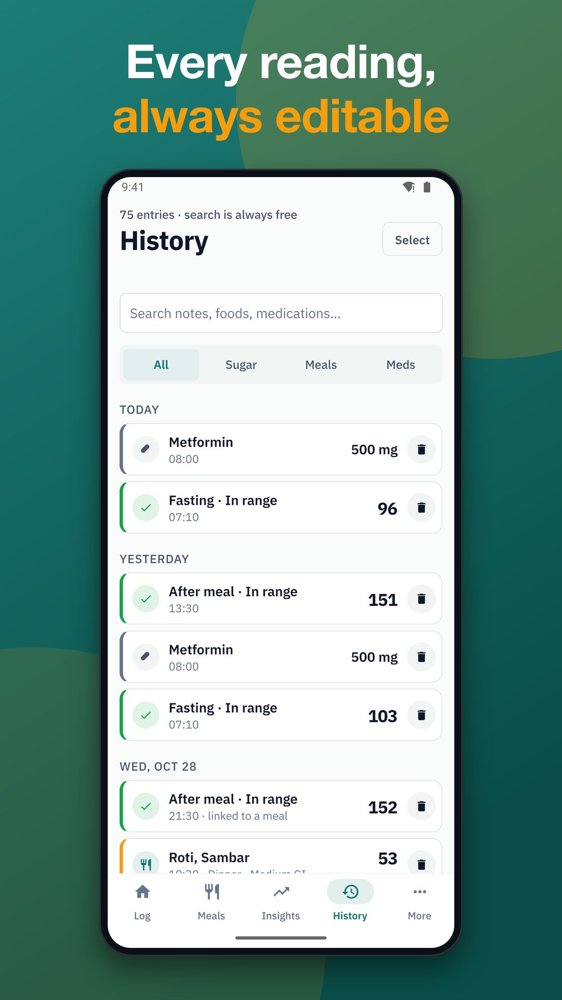
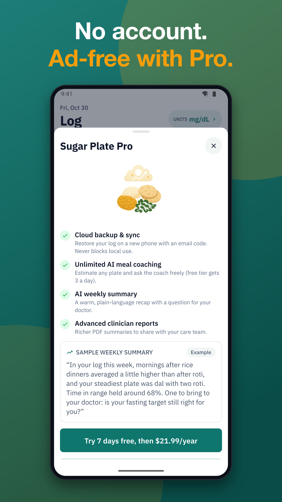

Diabetic Meal Planner
Diabetic meal planner with food scanner, carb counter and blood sugar diary






Sugar Plate is a diabetic meal planner and glucose diary that helps you see what your own plate does. Snap a photo of your meal, get an estimated carb count and glycemic band with a practical swap, then log your blood sugar in seconds. It is built for everyday dishes like dal, roti, rice, injera, ugali, arepas and tortillas.
Wellness tool only. Not a medical device. It gives no diagnosis and no dosing advice. Always follow your care plan and talk to your doctor.
FOOD FIRST: YOUR DIABETIC MEAL PLANNER
• Diabetes food scanner: photo meal analysis with estimated carbs, glycemic band and a local swap (AI, needs internet; photos are sent to our server for analysis only)
• Built-in database of regional dishes with carb ranges, searchable without limits
• Same meal as yesterday in one tap
• Diabetic carb counter and food tracker with editable portions
• Link a before-meal and after-meal reading to see the change for each meal
DIABETES BLOOD SUGAR TRACKING IN 5 SECONDS
• Big keypad, decimals, mg/dL or mmol/L toggle
• Meal context picked automatically by time of day; backdate any entry
• Color plus icon and label for in-range, high and low
• Notes, medication and insulin entries (logging only, no dose advice)
• Import readings from meters that support the standard Bluetooth Glucose Profile
LEARN WHAT WORKS FOR YOU
• Charts by day, week and month
• Averages for fasting, pre-meal and post-meal, plus time in range
• Estimated A1C with the formula shown and the number of readings behind it. It is an estimate, not a diagnosis
• Your best and worst meals ranked "in your log", plus comparisons such as rice vs roti dinners
• Weekly summary with a question to bring to your doctor
A BLOOD SUGAR DIARY THAT RESPECTS YOU
• No account needed. Signing in with an email code is optional and only for cloud backup
• Your data stays on your device by default
• Logging, charts, history, search, reminders, dish search, local backup and restore all work offline. Meal photo analysis needs internet
• Automatic daily local snapshots, plus a check of entry counts before app updates
• Optional PIN lock, dark and high-contrast themes, large text and TalkBack support
• Delete all your data any time
FREE
• Unlimited glucose, meal and medication logging
• Charts, time in range, A1C estimate, history and search
• Unlimited reminders for checks, meals and medication
• CSV and standard PDF export for your doctor
• Bluetooth meter import and local backup
• Ranked meal insights and a few AI photo analyses each day
• Contains ads with consent first. Ads are never personalised on health data
PRO
• Remove ads
• Cloud backup and multi-device sync
• Unlimited AI meal coaching and AI chat
• Advanced clinician PDF reports and AI weekly summary
• Annual plan with a free trial, or a lifetime option. Prices and trial terms are shown before you buy. Cancel any time in your store subscription settings, and restore purchases whenever you need.
No free feature is ever moved behind Pro.
AI estimates can be wrong. Check labels and portions, and never change medication based on this app.
Download Sugar Plate to plan meals, track your sugar and bring clear reports to your next appointment.
Support: jeets98e@gmail.com